CS 184: Computer Graphics and Imaging, Spring 2023
Project 3-1: Path Tracer
Karthik Dharmarajan, Lawrence Yunliang Chen, CS184-irobot3
Overview
An overview of the project, including your approach to and implementation for each of the parts, as well as what problems you have encountered and how you solved them. Strive for clarity and succinctness.
In this project, we implement ray tracing to enable a physically-based renderer for global illumination. We first implement ray generation that shoots from the camera center through the pixel samples, as well as the functions for ray-triangle intersection and ray-sphere intersection. We then implement the bounding volume hierarchy (BVH)accleration structure, including the ray intersection test with BVH. To simulate light transport in the scene and render images with realistic shading, we first implement direct illumination. This involves implementing the BSDF for diffuse material, computing zero-bounce illumination and direct lighting with uniform hemisphere sampling and importance sampling lights. After that, we implement global illumination with Russian Roulette. Finally, we use adaptive sampling to reduce the number of total samples needed for generating a high-quality image.
Putting together, our renderer can take in a COLLADA file (.dae) and render it either in a display window or save to a .png file. We can use the mouse to move the camera angle as well as zoom in and zoom out; we can also use the keyboard to examine our BVH partition structure and toggle different rendering settings, including the area light samples, the camera rays per pixel, and the maximum ray depth.
There are several parts/bugs that we encountered that took us a while to figure them out. In the BVH construction, we spent some time thinking about an efficient implementation. We end up doing an in-place sort of the pointers to the primitives at each step of partitioning the primitives, so that we only need to keep one vector of pointers and all pointers are stored in consecutive memory for all partitions. In our first implementation, we also encountered infinite recursion due to the case where all primitives lie on only one side of the split point. To handle that case, we adjust the partition so that there is at least one primitive in each partition. Additionally, in direct illumination, we computed the BSDF and cosine angles incorrectly at first, leading to incorrect rendering. After figuring out the issues, we were able to get the correct rendering.
Part 1: Ray Generation and Scene Intersection (20 Points)
Walk through the ray generation and primitive intersection parts of the rendering pipeline.
To sample a pixel, we generate ns_aa rays from the camera center through some sampled point in the pixel, and expressed that ray in the world coordinate. For each ray, we call PathTracer::est_radiance_global_illumination(Ray r) to get the scene radiance along that ray and compute the Monte Carlo estimate of the pixel by averaging the values. In particular, to compute the irradiance of a pixel $(x, y)$, the algorithm is as follows:
- Sample $(u, v) \in [0, 1] \times [0, 1]$
- Normalize the coordinate to get $(x', y') = ((x + u)/W, (y+v)/H)$
- Convert the normalized image coordinate to camera coordinate using the following formula:
$(x_{cam}, y_{cam}) = (-tan(\frac{hFov}{2} \frac{\pi}{180}) + 2tan(\frac{hFov}{2} \frac{\pi}{180}) x', -tan(\frac{vFov}{2} \frac{\pi}{180}) + 2tan(\frac{vFov}{2} \frac{\pi}{180}) y')$
- Generate a ray, Ray($center$, $direction$), in the world coordinate using the following formula:
$center = \text{camera position}$
$direction = \text{normalize}(R_{c2w} \cdot [x_{cam}, y_{cam}, -1])$
- Set the near and far clipping planes using
min_t and max_t
- Compute
sampleRadiance = est_radiance_global_illumination(ray)
- Repeat
ns_aa times and take the average.
Without BVH, the generated ray will be tested against all primitives in the scene for intersection test to find the nearest hit point between min_t and max_t. For each intersection, the Intersection object will be updated with its position, normal, and BSDF, so the irradiance can be computed. In this part, we render the normal direction.
For the ray-sphere intersection test, we use the following formula:
- For ray $\mathbf{r}(t) = \mathbf{o} + t\mathbf{d}$ and sphere $\mathbf{p}: (\mathbf{p} - \mathbf{c})^2 = R^2$:
- Solve for intersection: $(\mathbf{o} + t\mathbf{d} - \mathbf{c})^2 = R^2$
- $a t^2 + b t + c= 0, t_{1,2}= \frac{b \pm \sqrt{b^2-4ac}}{2a}$, where $a = \mathbf{d} \cdot \mathbf{d}, b = 2(\mathbf{o} - \mathbf{c}) \cdot \mathbf{d}, c = (\mathbf{o} - \mathbf{c}) \cdot (\mathbf{o} - \mathbf{c}) - R^2$
- There is an intersection if the discriminant $b^2-4ac \geq 0$ and at least one of $t_1$ and $t_2$ is between
min_t and max_t.
Explain the triangle intersection algorithm you implemented in your own words.
For the ray-triangle intersection test, we use the Moller Trumbore formula to solve for the barycentric coordinate of the intersection point:
- For ray $\mathbf{r}(t) = \mathbf{o} + t\mathbf{d}$ and triangle $P_0P_1P_2$:
- Solve for intersection: $\mathbf{o} + t\mathbf{d} = (1- b_1-b_2)P_0 + b_1P_1 + b_2P_2$
- The solution is:
$$\begin{bmatrix}
t \\
b_1 \\
b_2
\end{bmatrix} = \frac{1}{\mathbf{S}_1 \cdot \mathbf{E}_1}\begin{bmatrix}
\mathbf{S}_2 \cdot \mathbf{E}_2 \\
\mathbf{S}_1 \cdot \mathbf{S} \\
\mathbf{S}_2 \cdot \mathbf{d}
\end{bmatrix},$$
where $\mathbf{E}_1 = P_1 - P_0, \mathbf{E}_2 = P_2 - P_0, \mathbf{S} = \mathbf{o} - P_0, \mathbf{S}_1 = \mathbf{d} \times \mathbf{E}_2$, and $\mathbf{S}_2 = \mathbf{S} \times \mathbf{E}_1$.
- There is an intersection if $t$ is between
min_t and max_t and $0 \leq b_1, b_2, 1-b_1-b_2 \leq 1$.
The Moller Trumbore algorithm is easy to understand: It solves for an intersection point between the ray and the plane that the triangle lies on. The ray interests the triangle if and only if the ray intersects the plane ($t$ is between min_t and max_t) and the intersection points lies inside the triangle (the barycentric coordinates are all between 0 and 1).
Show images with normal shading for a few small .dae files.
Here are some examples:
|
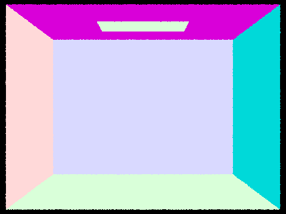
sky/CBempty.dae
|
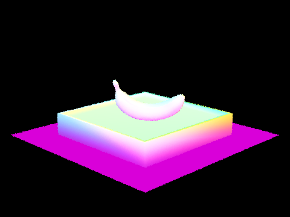
keenan/banana.dae
|
|
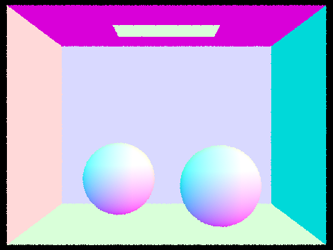
sky/CBspheres_lambertian.dae
|
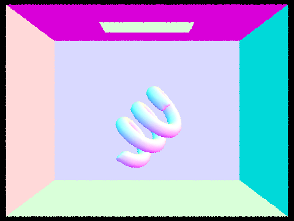
sky/CBcoil.dae
|
|
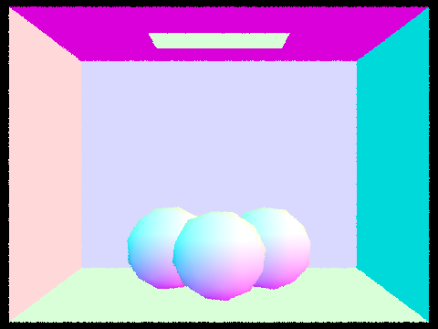
sky/CBgems.dae
|
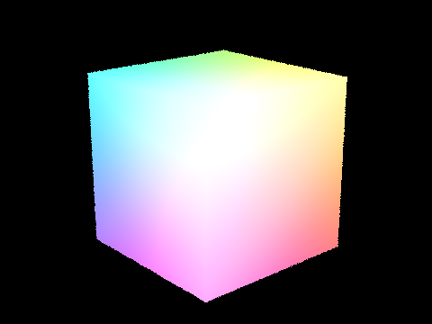
simple/cube.dae
|
Part 2: Bounding Volume Hierarchy (20 Points)
Walk through your BVH construction algorithm. Explain the heuristic you chose for picking the splitting point.
The high-level idea is follows: Given the start and end iteratord of the vector storing the pointers to the primitives, we compute the bounding box of the primitives contained and initialize a new BVHNode with that bounding box. We then check the number of primitives in this bounding box. If there are no more than max_leaf_size primitives, the node we just created is a leaf node and we set the node's start and end iterators to be start and end, pointing to the beginning and the end of a list of actual scene primitives, and return this leaf node to end the recursion.
Otherwise, we divide the primitives into a "left" and "right" collection. We choose the average of centroids along an axis as the split point. To determine which axis to split, we use a simple heuristic that prefers the most balanced split. In other words, we loop through all 3 axes, compute the average centroid in that axis, and check the differences in the number of primitives between the left half and the right half for each axis, and choose the axis whose resulting split would be the most balanced. After we choose the axis and the midpoint value to split, we use the std::partition function to reorder the elements in the vector of primitive pointers between start and end and get the iterator rightStart to the first element of the right half so that the left half is consecutive and is before the right half. This in-place reordering allows us to keep only one vector storing the primitive pointers associated with the root node, without having to construct a copy for each child node. In the edge case where one half does not contain any element, we randomly put one element into that half, to avoid infinite recursion. Finally, we recursively call BVHAccel:construct_bvh(...) to construct the current node's left and right children and update the current node's left and right pointers to point to those two child BVHNode.
Here is the psuedocode for our implemented function:
BVHNode *BVHAccel::construct_bvh(std::vector<Primitive *>::iterator start, std::vector<Primitive *>::iterator end, size_t max_leaf_size):
- Construct a bounding box
bbox containing all the primitives between start and end, and count the number of primitives numPrimitives
- Create a new node:
BVHNode *node = new BVHNode(bbox)
- If
numPrimitives < max_leaf_size:
node->start = start;node->end = end;- Return
node
- Otherwise, loop through each axis
- Compute the average centroid in that axis
- Count the number of primitives in the left half and the right half
- Update the axis and the split point if the current split is more balanced
- Let
splitAxis and splitValue be the chosen axis and value to split. Reorder std::vector<Primitive *> using rightStart = std::partition(start, end, primitive->get_bbox().centroid()[splitAxis] < splitValue)
if (start == rightStart) ++rightStart; if (end == rightStart) rightStart--;-
Recursively construct the left and right children:
BVHNode* leftNode = construct_bvh(start, rightStart, max_leaf_size);BVHNode* rightNode = construct_bvh(rightStart, end, max_leaf_size);node->l = leftNode;node->r = rightNode;- Return
node
Show images with normal shading for a few large .dae files that you can only render with BVH acceleration.
Here are some examples on large .dae files:
|
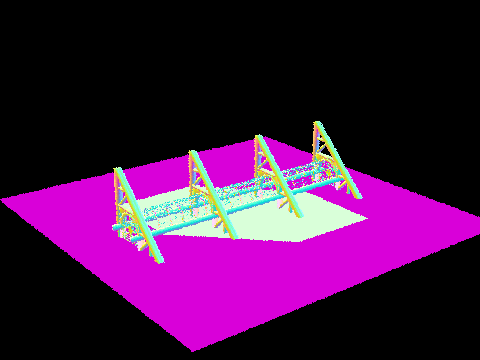
keenan/building.dae
|
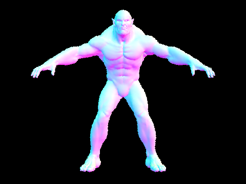
meshedit/beast.dae
|
|
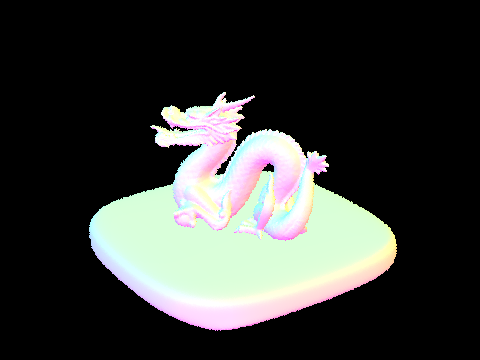
sky/dragon.dae
|
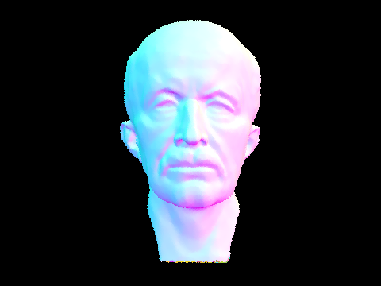
meshedit/maxplanck.dae
|
Compare rendering times on a few scenes with moderately complex geometries with and without BVH acceleration. Present your results in a one-paragraph analysis.
We tested on 4 objects with and without BVH acceleration. The table below shows the rendering time:
| File Name |
Render Time without BVH(s) |
Render Time with BVH(s) |
Speed Up |
| meshedit/teapot.dae |
4.7579 |
0.0426 |
111.69 x |
| keenan/banana.dae |
4.6983 |
0.0237 |
198.24 x |
| meshedit/cow.dae |
11.0646 |
0.0281 |
393.77 x |
| sky/CBcoil.dae |
15.0009 |
0.0295 |
508.51 x |
From the table, we can see significant speed up (100-500 x) from using BVH. Naively testing collision with all primitives takes many seconds even for very simple scenes. This shows the advantage of BVH and the importance of algorithm and implementation efficiency for practical rendering of complex scenes.
Extra Credit: Note that the implementation we presented above is efficient memory-wise, as all iterators held in the leaf nodes of the BVH point to contiguous data which is part of one large vector of primitive pointers. We do not allocate new memory for contiguous primitive pointers for each leaf node. To evaluate the improvement, we compare our
implementation to a baseline which allocates a new contiguous vector on the heap to store the partitioned primitive pointers (primitive pointers of both left and right children). We measure the memory contribution of the BVH by using Windows Resource Monitor and
subtracting the memory usage after the render from before the render. We evaluate both implementations on four scenes and show them in the table below.
| File Name |
Memory Consumption with heap allocating BVH(kB) |
Memory Consumption with in-place BVH(kB) |
Reduction (%) |
| keenan/building.dae |
36,342 |
22,140 |
39.04% |
| sky/CBlucy.dae |
93,224 |
36,312 |
61.04% |
| sky/blob.dae |
133,211 |
45,772 |
65.63% |
| sky/CBdragon.dae |
71,954 |
27,100 |
62.33% |
Results show that our implementation which partitions in place reduces the memory consumption of the BVH by 39-65% on average.
Part 3: Direct Illumination (20 Points)
Walk through both implementations of the direct lighting function.
In this section, we implement direct lighting calculation. We use two sampling methods, one is uniform hemisphere sampling, the other is light sampling. The uniform hemisphere sampling uniformly samples incoming ray directions in the hemisphere, and the light sampling is to sample all the light sources directly. In each case, we use the Monte Carlo estimator:
$$L_r(p, \omega_r) \approx \frac{1}{N}\sum_{j=1}^N\frac{f_r(p, \omega_j \rightarrow \omega_r) L_i(p, \omega_j) cos(\theta_j)}{p(\omega_j)},$$
where $N=$ scene->lights.size() * ns_area_light is the total number of samples, $p=$ isect's 3D location is the point of the object we want to render, $\omega_r=$ w_out is the reflected ray to the camera (-r), $\omega_j$ is the sampled ray, $L_i(p, \omega_j)$ is the radiance of the source light if the sampled new ray intersects with the scene at a light source.
Here is our implemented algorithm for uniform hemisphere sampling:
Vector3D PathTracer::estimate_direct_lighting_hemisphere(const Ray &r, const Intersection &isect):
- Compute the coordinate transform between the world and the intersection point's local frame:
o2w, w2o using isect.n
- Compute the 3D location of the point we are rendering and the outgoing ray, both in the world coordinate:
hit_p = r.o + r.d * isect.tw_out = w2o * (-r.d)
- $L_r = 0$
- For $j$ in $1 ... $
num_samples
- Sample a direction
w_j in the hemisphere using w_j = hemisphereSampler->get_sample().normalize(), expressed in the local frame
- Compute the BSDF:
bsdf = isect.bsdf->f(w_out, w_j)
- Compute the cosine of the angle between the incoming light and the normal to account for Lambert's law $$cosTheta =[0, 0, 1] \cdot \omega_j$$
- Construct the sampled ray in the world frame:
newRay(hit_p, o2w * w_j)
- Test intersection between
newRay and the BVH
- If there is intersection, add the contribution of the sampled ray to the total radiance $L_r$:
$L_r$ += $\frac{1}{2\pi}$ newRayIntersection.bsdf->get_emission() * bsdf * cosTheta,
where $p(\omega_j)=2\pi ~ \forall j$ for uniform hemisphere sampling, and newRayIntersection.bsdf->get_emission() is only nonzero for light sources
- Return $L_r$ /
num_samples
Here is our implemented algorithm for importance sampling lights:
- Steps 1-3 are the same as above
- For each light:
- $L_{r,i} = 0$
- if the light is a point light (
light->is_delta_light()), then set num_samples=1; otherwise, set num_samples=ns_area_light
- For $j$ in $1 ... $
num_samples
-
Sample a direction and get its
pdf as well as the light's radiance using the light's sampling function:
radiance = light->sample_L(hit_p, &w_j, &distToLight, &pdf),
where w_j is expressed in the world frame
- If the light is behind the surface ($isect.n \cdot w_j < 0$), continue.
- Compute the BSDF:
bsdf = isect.bsdf->f(w_out, w2o * w_j)
- Compute the cosine of the angle between the incoming light and the normal to account for Lambert's law $$cosTheta =[0, 0, 1] \cdot (w2o * \omega_j)$$
- Construct the sampled ray in the world frame:
newRay(hit_p, w_j)
- Test intersection between
newRay and the BVH
- If there is intersection, add the contribution of the sampled ray to the total radiance $L_r$:
$L_{r,i}$ += newRayIntersection.bsdf->get_emission() * bsdf * cosTheta / pdf,
where pdf is obtained by the sample_L function above.
- $L_r$ += $L_{r,i}$ /
num_samples
- Return $L_r$
So the key differences between the two algorithms lie in the sampling of $\omega_j$ and the pdf in the monte carlo integration formula. In the implementation, $\omega_j$ is in the local frame for uniform hemisphere sampling, and is in the world frame for light sampling, so we need to account for the transforms when constructing the rays and angles.
Show some images rendered with both implementations of the direct lighting function.
Here are some images:
|
Uniform Hemisphere Sampling
|
Light Sampling
|
|
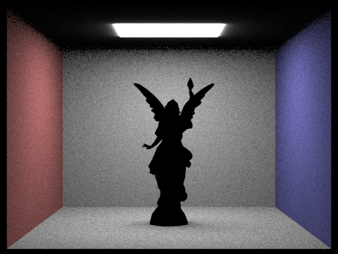
sky/CBlucy.dae
|
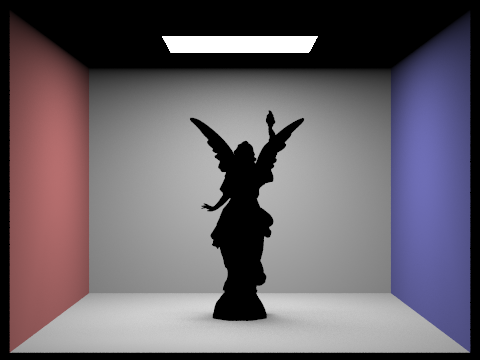
sky/CBlucy.dae
|
|
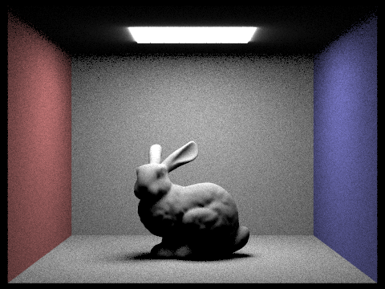
sky/CBbunny.dae
|
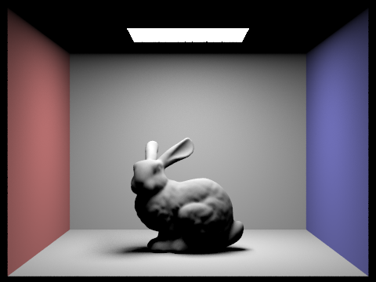
sky/CBbunny.dae
|
|
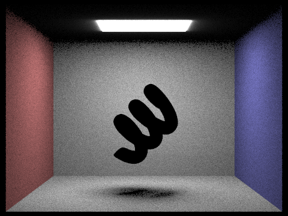
sky/CBcoil.dae
|
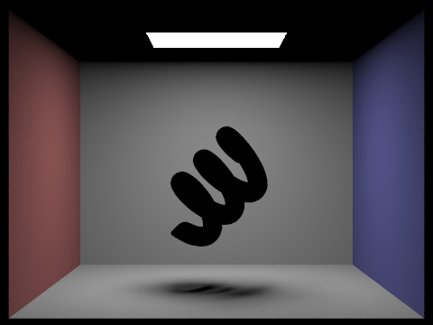
sky/CBcoil.dae
|
|
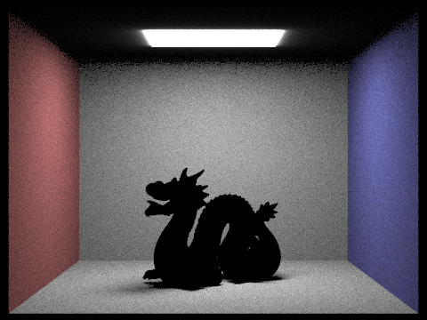
sky/dragon.dae
|
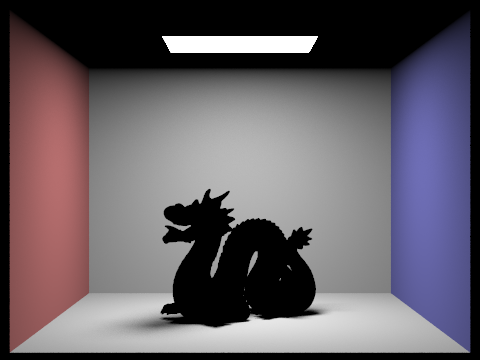
sky/dragon.dae
|
 sky/bench.dae
sky/bench.dae
|
sky/bench.dae
|
Focus on one particular scene with at least one area light and compare the noise levels in soft shadows when rendering with 1, 4, 16, and 64 light rays (the -l flag) and with 1 sample per pixel (the -s flag) using light sampling, not uniform hemisphere sampling.
|
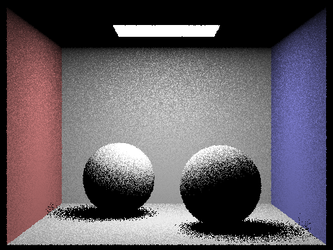
1 Light Ray (sky/CBspheres_lambertian.dae)
|
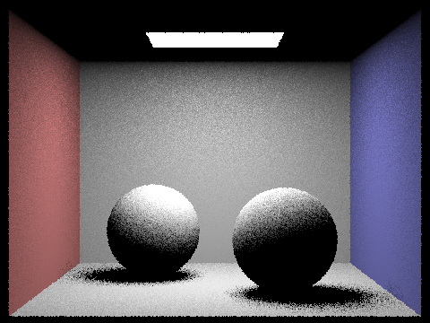
4 Light Rays (sky/CBspheres_lambertian.dae)
|
|
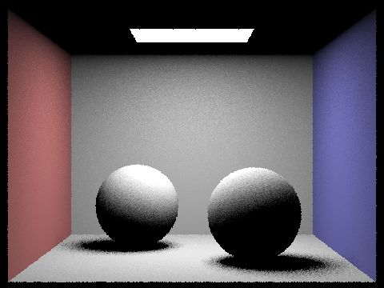
16 Light Rays (sky/CBspheres_lambertian.dae)
|
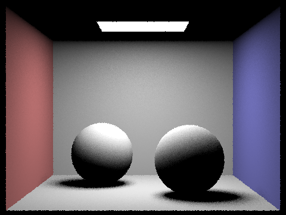
64 Light Rays (sky/CBspheres_lambertian.dae)
|
From the above images, we can see that the noise level decreases as the number of light rays increases. This is because the variance of Monte Carlo samples decreases as the number of samples increases. Thus, as we sample more light rays, the estimate of the direct lighting is more accurate and less noisy, and the shadow appears smoother.
Compare the results between uniform hemisphere sampling and lighting sampling in a one-paragraph analysis.
Both sampling methods will get better rendering and converge to the same result as the number of samples increases, since both are unbiased estimates. However, from the above figures, we can see that with the same number of samples, the lighting sampling method is more accurate and less noisy than the uniform hemisphere sampling method. This comes from the reduction in variance from importance sampling. As the light sampling only samples rays from the light, there is a much higher chance that the sampled radiance contributes to the integral. For sky/bench.dae, the uniform sampling results in a dark image because the light is a point light and there is a 0 probability that a uniform sampled ray will hit the point light source, while light sampling takes care of this situation. The con, on the other hand, is that the lighting sampling method can be more complex to implement, as the sampling depends on the properties of the light sources. In contrast, uniform hemisphere sampling can be simpler to implement, at the cost of being less efficient.
Part 4: Global Illumination (20 Points)
Walk through your implementation of the indirect lighting function.
From the lecture, we know that the rendering equation is: $$L = L_e + K(L)$$ where $L_e$ is the emitted light, $K(L)$ is the 1-bounce light, and $L$ is the total light. The solution to the rendering equation is:
$$L = L_e + K(L_e) + K^2(L_e) + K^3(L_e) + ... $$
where $L_e$ is the emitted light, $K(L_e)$ is the 1-bounce light, $K^2(L_e)$ is the 2-bounce light, $K^3(L_e)$ is the 3-bounce light, etc.
At a high level, this means the Monte Carlo estimate can be obtained as follows:
1. Trace a primary ray from the camera's viewpoint through each pixel in the image plane.
2. At each intersection point, compute the 0-bounce light $L_e$ and 1-bounce light $L_1$.
3. Randomly decide whether to continue tracing the ray using the Russian Roulette techniquewith some continuation probability cpdf. This ray is obtained by importance sampling the BSDF, and the radiance $L_{>1}$ is obtained by recursively calling the function returns $L_{>1} = \tilde L_e + \tilde L_1 + \tilde L_{>1}/cpdf$.
4. Return $L = L_e + L_1 + L_{>1}/cpdf$.
Here is a more detailed walkthrough of our implementation, with additional consideration of the maximum recursive depth. We use a continuation probability of 0.7 in our implementation:
Vector3D PathTracer::est_radiance_global_illumination(const Ray &r):
- If the ray
r from isect does not intersect the BVH, return 0.
- else
L_out = zero_bounce_radiance(r, isect)- if max_ray_depth > 1,
L_out += at_least_one_bounce_radiance(r, isect)
- return
L_out
Vector3D PathTracer::at_least_one_bounce_radiance(const Ray &r, const Intersection &isect):
- The same first 3 steps as in direct illumination: Compute
o2w, w2o, hit_p, w_out, and initialize $L_r = 0$
- Add the 1-bounce radiance: $L_r$ +=
one_bounce_radiance(r, isect), which either uses uniform hemisphere sampling or importance sampling of the lights, as implemented in Part 3
- Decide whether to continue. If
r.depth > 0 or coin_flip(0.7):
- Sample an incoming light direction and compute the BSDF:
bsdf = isect.bsdf->sample_f(w_out, &w_i, &pdf)
- Compute the cosine of the angle between the incoming light and the normal to account for Lambert's law $$cosTheta =[0, 0, 1] \cdot \omega_i$$
- Construct the sampled ray in the world frame:
newRay(hit_p, o2w * w_i)
newRay.depth = max(0, r.depth-1)- Test intersection between
newRay and the BVH
- If there is intersection, add the contribution of the sampled ray to the total radiance $L_r$:
$L_r$ += at_least_one_bounce_radiance(newRay, newRayIntersection) * bsdf * cosTheta / (pdf * divideFactor),
where divideFactor = 0.7 if newRay.depth > 0 else 1
- Return $L_r$
Show some images rendered with global (direct and indirect) illumination. Use 1024 samples per pixel.
Here are 4 images with global illumination rendering:
>
|
sky/CBbunny.dae
|
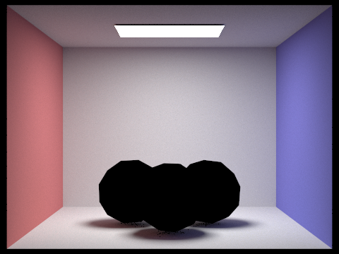
sky/CBgems.dae
|
|
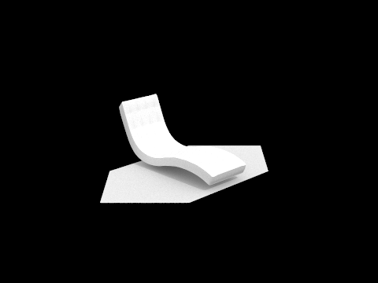
sky/bench.dae
|
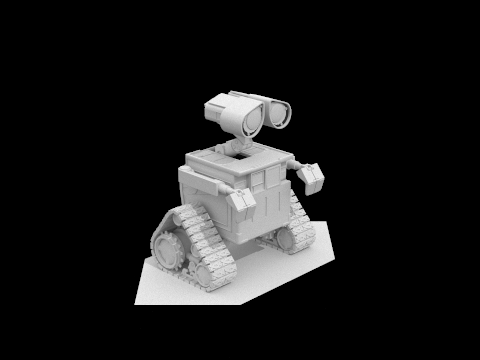
sky/wall-e.dae
|
Pick one scene and compare rendered views first with only direct illumination, then only indirect illumination. Use 1024 samples per pixel. (You will have to edit PathTracer::at_least_one_bounce_radiance(...) in your code to generate these views.)
|
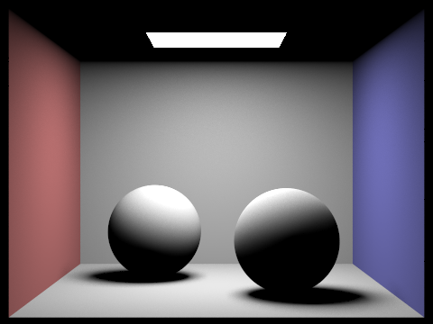
Only direct illumination (sky/CBspheres_lambertian.dae)
|
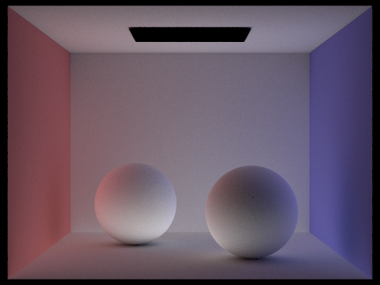
Only indirect illumination (sky/CBspheres_lambertian.dae)
|
We choose to use sky/CBspheres_lambertian.dae as an example. The left image shows the view with only direct illumination (i.e., 0 bounce and 1 bounce), and the right image shows only indirect illumination (2 bounce and more, up to max_ray_depth = 5). We can see that the left image shows the light source as well as the object colors and shadows. The right image is darker because of lack of direct lighting, but it shows brighness where the left image does not have (eg. the bottom of the balls and the ceiling), and it has some indirect shadows on the wall.
For CBbunny.dae, compare rendered views with max_ray_depth set to 0, 1, 2, 3, and 100 (the -m flag). Use 1024 samples per pixel.
|
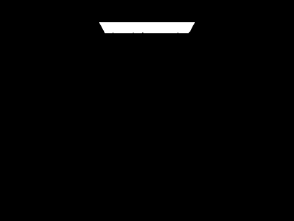
max_ray_depth = 0 (sky/CBbunny.dae)
|
max_ray_depth = 1 (sky/CBbunny.dae)
|
|
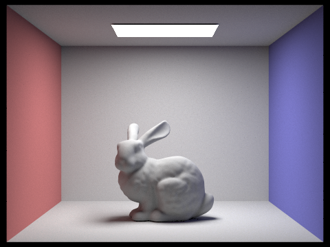
max_ray_depth = 2 (sky/CBbunny.dae)
|
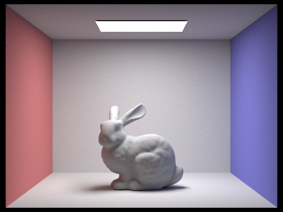
max_ray_depth = 3 (sky/CBbunny.dae)
|
|
max_ray_depth = 100 (sky/CBbunny.dae)
|
When max_ray_depth is 0, only the light source is visible and everything else is black. When max_ray_depth is 1, this is direct illumination; the light casts rays on the bunny and the walls. When max_ray_depth is 2, we see that the indirect light makes the room brighter, and the ceiling and the bottom of the bunny are brighter as well. When max_ray_depth is 3, the edges and corners along the ceiling and the walls are brighter due to reflected light. When max_ray_depth is 100, the rendering looks quite realistic.
Pick one scene and compare rendered views with various sample-per-pixel rates, including at least 1, 2, 4, 8, 16, 64, and 1024. Use 4 light rays.
|
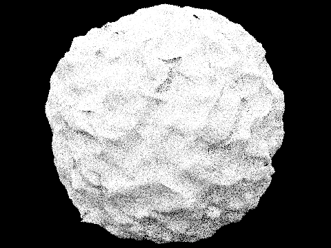
1 sample per pixel (sky/blob.dae)
|
2 samples per pixel (sky/blob.dae)
|
|
4 samples per pixel (sky/blob.dae)
|
8 samples per pixel (sky/blob.dae)
|
|
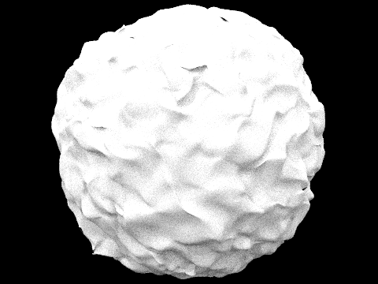
16 samples per pixel (sky/blob.dae)
|
64 samples per pixel (sky/blob.dae)
|
|
1024 samples per pixel (sky/blob.dae)
|
Part 5: Adaptive Sampling (20 Points)
Explain adaptive sampling. Walk through your implementation of the adaptive sampling.
In standard rendering, a fixed number of samples are taken for each pixel in the image. However, this can be inefficient and time-consuming, as some areas of the image may not require as many samples to achieve a high level of quality, while other areas may require more samples to avoid noise and artifacts.
In contrast, adaptive sampling dynamically adjusts the number of samples used for different areas of the scene. Areas that are more important or contain more complex features, such as shadows or reflections, are given more samples to ensure a higher level of detail and accuracy. Conversely, areas that are less important or contain simpler features can be given fewer samples, resulting in faster rendering times without sacrificing quality. By focusing on more difficult parts of the image, adaptive sampling can achieve higher levels of detail and accuracy while minimizing rendering time and computational resources.
For our implementation, we follow the guidelines and keep track of two variables, s1 and s2:
$$s_1= \sum_{k=1}^n x_k$$
$$s_2= \sum_{k=1}^n x_k^2.$$
The mean and variance of the samples can then be computed by
$$\mu = \frac{s_1}{n}$$
$$\sigma^2 = \frac{1}{n-1}\left(s_2 - \frac{s_1^2}{n}\right).$$
When $I = 1.96 \frac{\sigma}{\sqrt{n}} \leq maxTolerance \cdot \mu$, we don't need to continue to sample more rays all the way to num_samples and can compute the average radiance directly.
Here is a psuedocode of our implementation:
- i = 0; s1 = 0; s2 = 0
- For i in 0 ... num_samples:
- If i > 0 and i %
samplesPerBatch == 0
- Compute
mu, sigma_squared, I using the formula above
- If
I $\leq$ maxTolerance * mu, break
- Sample a ray:
ray = camera->generate_ray(samplePosition[0], samplePosition[1])
- Compute radiance of the sample:
sampleRadiance = est_radiance_global_illumination(ray)
radiance += sampleRadiance;illuminance = sampleRadiance.illum(); s1 += illuminance; s2 += illuminance * illuminance;
sampleBuffer.update_pixel(radiance/i, x, y)
Pick two scenes and render them with at least 2048 samples per pixel. Show a good sampling rate image with clearly visible differences in sampling rate over various regions and pixels. Include both your sample rate image, which shows your how your adaptive sampling changes depending on which part of the image you are rendering, and your noise-free rendered result. Use 1 sample per light and at least 5 for max ray depth.
|
Rendered image (sky/CBbunny.dae)
|
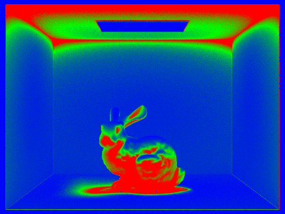
Sample rate image (sky/CBbunny.dae)
|
|
Rendered image (sky/wall-e.dae)
|
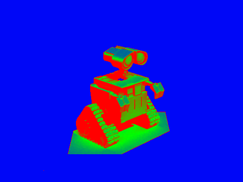
Sample rate image (sky/wall-e.dae)
|
Final Comments
Collaboration
We complete the project together, throughout all questions. We use pair programming, where Karthik is the driver and Lawrence is the navigator. For all questions, we discuss the approach together before typing the code. Overall, the project went quite smoothly with relatively few major bugs.
We have learned a lot of intersting things from completing the project. First, we see how a ray tracing pipeline is implemented, including shooting rays, intersection tests, and recursive ray tracing with radiance/BSDF computation. We see the various considerations that go into the efficient construction of BVH, as well as adaptive sampling. We notice how an inefficient implementation can easily slow down rendering, and how a small bug can lead to severe deterioration of the rendering result.